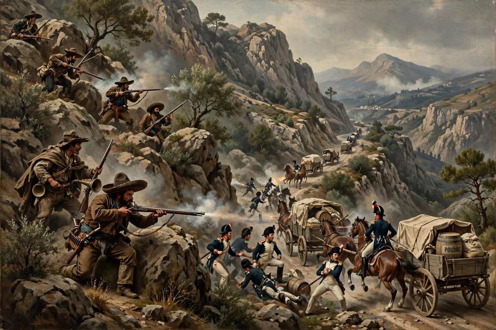

Wikipedia > Guerrilla warfare
Guerrilla warfare

Guerrilla warfare is a form of irregular warfare in which small groups of combatants — paramilitaries, armed civilians or regulars — use military tactics including ambushes, sabotage, raids, hit-and-run attacks and mobility to fight a larger and less mobile traditional military. The word comes from the Spanish guerrilla ("little war"), applied to Spanish and Portuguese irregulars who resisted Napoleon's armies in the Peninsular War (1808–1814).
Principles
Guerrilla tactics exploit terrain, local knowledge and concealment among the population to offset inferior numbers and firepower. The aim is typically to exhaust and demoralise the enemy and erode its political will over time rather than to hold ground. The Chinese strategist Sun Tzu described related principles in antiquity, and the Roman general Quintus Fabius Maximus used delaying tactics against Hannibal. Modern theorists — T. E. Lawrence in Arabia, Mao Zedong in China, Võ Nguyên Giáp in Vietnam and Ernesto "Che" Guevara in Cuba and Bolivia — systematised guerrilla strategy for insurgencies.
History
Guerrilla methods are as old as warfare: Scythian tactics against Persia, and indigenous resistance to colonisation, are early examples. The nineteenth century saw prominent guerrilla campaigns by Boer commandos in South Africa and by Filipino forces against the United States. In the Second World War, resistance movements across occupied Europe and Asia — Soviet and Yugoslav partisans, the French maquis, Chinese communist forces — tied down large Axis formations. After 1945 guerrilla warfare was central to wars of national liberation in China, Vietnam, Algeria, Cuba and elsewhere, and later to conflicts in Afghanistan, Iraq and Syria, where improvised explosive devices became a signature weapon.
Legal status
Guerrillas who do not distinguish themselves from civilians may lose protections under the laws of war. The Geneva Conventions and their Additional Protocols set conditions — responsible command, a fixed distinctive sign, arms carried openly and observance of the laws of war — under which members of organised resistance movements qualify for prisoner-of-war status. In practice, captured guerrillas have often been treated as criminals or terrorists by the states fighting them, and the categorisation remains contested.
Countermeasures
Counter-guerrilla strategy generally combines intelligence-led small-unit operations, population control or protection, and political measures intended to separate guerrillas from their support base; theorists disagree about the relative importance of military pressure and political reform, and about the record of repressive methods, which have sometimes succeeded tactically while proving counterproductive strategically.
See also: Insurgency · Asymmetric warfare · Peninsular War · Partisan (military)